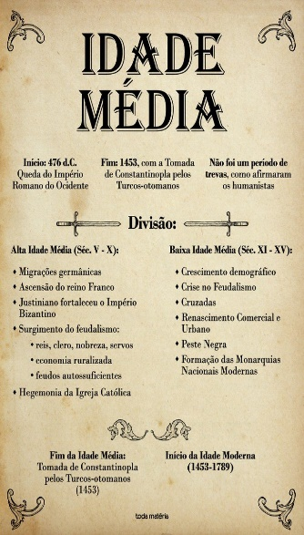
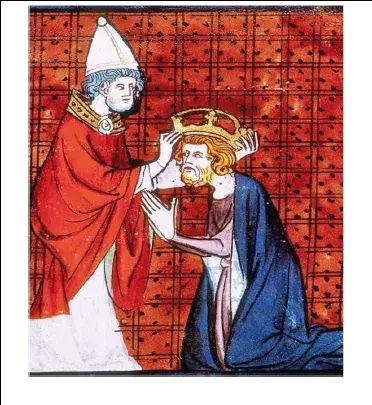
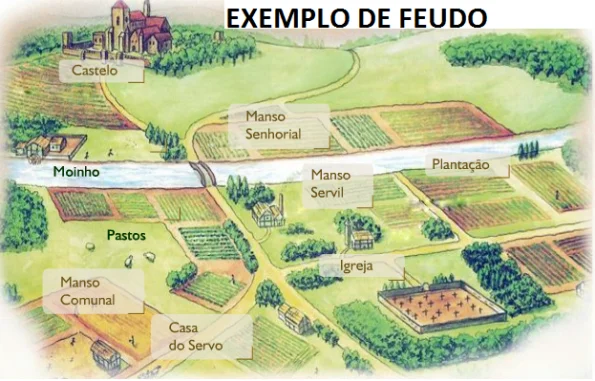

IDADE MÉDIA

A Idade Média instituiu o feudalismo na Europa, tornou a agricultura sua atividade principal e consolidou o poder da Igreja Católica após aliança com os reinos bárbaros.
A Idade Média é o período da história geral que se inicia no século V, logo após a queda do Império Romano do Ocidente, e termina no século XV, com a conquista de Constantinopla pelo Império Turco-Otomano. Foi um período marcado pela síntese da herança romana com a cultura dos povos bárbaros que invadiram o Império Romano.
A Igreja Católica tornou-se uma instituição poderosa e influente não apenas na religião, mas também na sociedade medieval. A invasão bárbara provocou a fuga da cidade em direção ao campo. A Europa ocidental ruralizava-se, e a riqueza era a terra. A agricultura tornou-se a principal atividade econômica, e a produção dos feudos era para o próprio sustento.
A partir do século XIII, por conta dos renascimentos comercial e urbano, o mundo medieval começou a entrar em crise. A centralização do poder nas mãos dos reis derrotou os senhores feudais, pacificou as revoltas servis e abriu as portas da Europa para a Idade Moderna.
Alta Idade Média
O período da Alta Idade Média corresponde à formação da Europa medieval até o seu apogeu, no século X. O Império Romano do Ocidente acabou no século IV, e o imenso território conquistado pelos romanos pertencia então aos povos bárbaros. O termo “bárbaro” era como os romanos chamavam os povos que não faziam parte do seu império, que estavam fora dos limites romanos, ou seja, eram aqueles que não compartilhavam do mesmo costume romano, que não tinham a cidadania romana.
A Alta Idade Média constituiu-se pela junção da herança romana com os costumes dos povos bárbaros. A invasão bárbara alcançou a cidade de Roma, que foi saqueada diversas vezes. O temor dessas invasões fez com que os habitantes das cidades buscassem refúgio e trabalho no campo. Ocorreu o que chamamos de ruralização da Europa.
Os reinos germânicos adaptaram seus costumes aos os dos romanos. A Igreja Católica aliou-se aos reis e tornou-se a grande ponte entre o mundo germânico e o mundo romano. Os povos bárbaros abandonaram suas antigas práticas religiosas e aderiram ao cristianismo. A fé cristã expandiu-se pela Europa ocidental, reforçando o poder do papa. Foi no Império Carolíngio, no século VII, que a Igreja conseguiu consolidar o seu domínio.
O imperador Carlos Magno conquistou uma grande quantidade de terras e doou algumas delas à Igreja. Começava a formação dos Estados pontifícios, grandes quantidades de terra que estavam sob o domínio do papa. Carlos Magno promoveu a distribuição de terras aos senhores feudais exigindo em troca a sua fidelidade e seu auxílio em caso de guerra. Logo após a sua morte, seus filhos não conseguiram manter a unidade do império, que acabou dissolvendo-se. O poder foi descentralizado entre os senhores feudais.
A sociedade medieval era estamental, ou seja, não possibilitava a ascensão social. No topo da pirâmide estava o clero, logo abaixo vinha a nobreza, e na base estavam os servos, os únicos que trabalhavam e sustentavam as classes de cima. A agricultura tornou-se a principal atividade econômica. Os servos trabalhavam na terra para o seu próprio sustento, de sua família e do seu senhor.
Havia uma dinâmica ao lidar-se com a terra aproveitando-a ao máximo sem desgastá-la. Enquanto uma parte da terra era utilizada para o cultivo, uma outra porção dela ficava em repouso. Logo após a colheita, a terra trabalhada ficava em repouso e a outra era utilizada. Esse era o sistema de rotação, que evitava o desgaste do solo.
A cultura da Alta Idade Média estava concentrada nos mosteiros. A produção da Antiguidade Clássica foi guardada, e os monges copistas tinham a missão de copiar os textos antigos para que não se perdessem com o tempo. O acesso às bibliotecas dos mosteiros era restrito e o trabalho era manual. Para saber mais sobre esse primeiro período medieval.

Carlos Magno - Imperador do Império Carolíngio
Baixa Idade Média
O aumento populacional ocorrido a partir do ano 1000 foi motivado principalmente pela diminuição significativa das guerras bárbaras. Por isso, chama-se esse ano de “O ano da paz de Deus”. Esse aumento populacional provocou significativas mudanças na estrutura medieval e, mais tarde, levou à sua crise, no século XV.
A forma de lidar com a terra modificou-se. A produção agrícola aumentou e passou-se a usar as terras que ficavam em repouso. Dessa forma, o desgaste da terra não tardou a acontecer, acarretando dificuldades na produção.
As cidades voltaram a ter movimentação mais intensa, pois o aumento populacional levou as pessoas a saírem do campo e retornarem a elas. O comércio também voltou com atividade mais intensa por meio da troca de mercadorias.
As Cruzadas começaram como movimento religioso, mas, com o passar do tempo, transformaram-se em expedições comerciais ao trazer as especiarias orientais para a Europa ocidental. Essa movimentação Ocidente–Oriente fez retomar as navegações pelo mar Mediterrâneo, até então abandonadas por causa da ruralização da Europa e do domínio islâmico. Gênova e Veneza enriqueceram com o comércio marítimo logo após fazerem um acordo com os comerciantes islâmicos do Oriente.
As universidades promoveram mudanças na vida cultural da Idade Média. Surgidas no século XIII, elas se tornaram locais de estudos e discussão livre de ideias. Os mosteiros começaram a perder sua força cultural, que, desde o início do período medieval, era intensa. A moeda circulando com mais intensidade pela Europa por causa da volta às atividades comerciais passou a financiar a produção artística e intelectual.
A retomada do comércio fez surgir as feiras. Elas funcionavam ao redor dos feudos e comercializavam os produtos vindos do Oriente. Outras feiras formavam-se às margens das estradas para garantir a segurança das comitivas do comércio e a instalação de bancos para a troca de moedas. Cidades como Champagne, na França, surgiram dessas feiras. Uma nova classe social apareceu: a burguesia.
Essas transformações no mundo medieval começaram a fazer a estrutura social entrar em crise. As bases da Idade Média foram afetadas. A agricultura perdia espaço para o comércio. O campo esvaziava-se, e as cidades enchiam-se. As ideias que eram dominadas pela Igreja circulavam livremente pelas universidades. A fé, que era o elemento norteador do pensamento humano, perdia espaço para a razão.
Feudalismo
O feudalismo é uma das principais características da Idade Média. Trata-se de um sistema social, econômico e político que vigorou por todo período medieval. Nesse sistema, terras eram concedidas por um suserano ao seu vassalo em troca de fidelidade e ajuda militar. Os senhores feudais controlavam os feudos, e a mão de obra era servil. Os servos deveriam pagar impostos e trabalhar para os senhores e o clero.
A atividade econômica feudal era a agricultura, e a produção atendia as demandas internas do feudo. A Igreja Católica exercia grande influência dentro dos feudos, onde aconteciam as cerimônias religiosas e os registros de nascimento, casamento e morte. O feudalismo entrou em crise no século XIV, logo após as revoltas servis.

Crise do século XIV
A crise do século XIV pode ser resumida em três palavras:
- Fome
- Peste
- Guerra
A fome foi resultado da escassez de alimentos provocada pela redução da produção agrícola por causa de intemperes naturais.
A Peste Negra foi uma doença que matou milhões de pessoas e espalhou-se rapidamente pela Europa. Vinda do Oriente, essa peste foi beneficiada pela ausência de higiene dos medievais. Com o alto número de mortos, começou a faltar mão de obra para o trabalho no campo. Os poucos servos que ainda trabalhavam nos feudos tiveram que trabalhar mais. Isso gerou uma revolta servil que abalou a estrutura feudal. As guerras entre os reinos europeus e as revoltas servis foram derrotadas pelos reis, que passaram de simples chefes militares a governantes dos reinos.
Fim da Idade Média
As mudanças da Baixa Idade Média levaram a Europa ocidental à crise. A centralização do poder nas mãos dos reis reduziu os poderes locais, que estavam sob o comando dos senhores feudais. Além disso, os reis questionavam a influência do poder do papa nas decisões políticas. Esses poderes reais deram início à formação dos estados nacionais, decretando-se o fim da Idade Média e o início da Idade Moderna.
Exercícios logo abaixo, clique no botão para aparecer

(ENEM 2014) Todo homem de bom juízo, depois que tiver realizado sua viagem, reconhecerá que é um milagre manifesto ter podido escapar de todos os perigos que
se apresentam em sua peregrinação; tanto mais que há tantos outros acidentes que diariamente podem aí ocorrer que seria coisa pavorosa àqueles que aí navegam
querer pô-los todos diante dos olhos quando querem empreender suas viagens.
J. P. T. Histoire de plusieurs voyages aventureux. 1600.
In: DELUMEAU, J. História do medo no Ocidente: 1300-1800. São Paulo: Cia. das Letras, 2009 (adaptado).
Esse relato, associado ao imaginário das viagens marítimas da época moderna, expressa um sentimento de:
(ENEM 2013) Quando ninguém duvida da existência de um outro mundo, a morte é uma passagem que deve ser celebrada entre parentes e vizinhos.
O homem da Idade Média tem a convicção de não desaparecer completamente, esperando a ressurreição. Pois nada se detém e tudo continua na eternidade.
A perda contemporânea do sentimento religioso fez da morte uma provação aterrorizante, um trampolim para as trevas e o desconhecido.
DUBY, G. Ano 2000 na pista do nossos medos. São Paulo: Unesp, 1998 (adaptado).
Ao comparar as maneiras com que as sociedades têm lidado com a morte, o autor considera que houve um processo de: